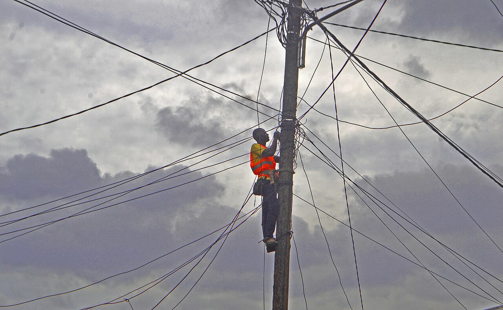

💡 停水停電查詢
「計畫性停電」是台電為了施工、換變壓器、遷移線路排定的停電（不是缺電限電），公告其實都有，只是藏在各區營業處的網頁裡很難查。下面這個工具把台電官方公告整理成可以打字搜尋的列表：輸入你家附近的路名或區名，就能看近期會不會停電。

計畫性停電查詢（台電官方公告整理）
資料載入中…
資料來源：台灣電力公司各區營業處「計畫性工作停電公告」。本頁為定期整理的快照（整理時間見上方），最新與完整資訊請以台電官方公告為準；目前涵蓋全台 20 個區營業處。官方原頁：基隆區營業處、北市區營業處、桃園區營業處、新竹區營業處、台中區營業處、彰化區營業處、嘉義區營業處、台南區營業處、高雄區營業處、屏東區營業處、台東區營業處、花蓮區營業處、宜蘭區營業處、澎湖區營業處、北南區營業處、北北區營業處、北西區營業處、南投區營業處、鳳山區營業處、雲林區營業處
突然停電怎麼辦（非計畫性）
不在上方公告裡、卻突然沒電，通常是設備故障或天災造成的突發停電，不會事先公告。可以這樣處理：
- 先看鄰居家有沒有電，確認是自家跳電還是整區停電。
- 整區停電：撥台電客服 1911 通報或詢問復電進度，並上台電官網「停電查詢」系統看搶修狀態。
- 看到電線掉落或外露，不要碰觸，立刻打 1911 通知台電。
- 停電時先拔掉精密電器插頭（電腦、電視），復電瞬間的電壓波動比較傷機器；冰箱門盡量不要開，食物保冷可以撐比較久。
停水查詢：看台水公告
停水公告由台灣自來水公司發布在「停水公告查詢系統」（web.water.gov.tw/wateroff），可以依地址查詢自家是否在停水範圍；進行中的停水公告，本站已直接整理在 國家資訊地圖・停水圖層，不用再自己翻官方系統。台水也有官方 LINE「停水公告查詢系統」，訂閱並輸入住址後，有停水會提前推播通知——這是目前最不會漏掉停水消息的方法，建議長輩也一起訂閱。
停水前，台水提醒的 5 件事
- 提前 6 小時完成儲水，避免大家集中在停水前大量取水，管線末端反而提前沒水。
- 關閉抽水機、加壓馬達電源，避免缺水空轉損壞甚至引發火災；電熱水器也要依安全規範處理。
- 進水口低於地面的建築，停水期間關閉總表前制水閥，降低虹吸污染風險。
- 用橡皮管接水時，管口不要浸在水裡，避免虹吸造成二次污染。
- 復水後先開水閥排氣再正常用水；管線末端或地勢較高處，水壓恢復會比較慢。
（整理自台灣自來水公司停水宣導資訊。）